Bruno Ceccato é artista multidisciplinar atuante no interior de São Paulo, formado em Arquitetura (2010). Em 2015, aprofundou-se no estudo da cerâmica e começou a desenvolver suas primeiras obras autorais. Em 2018, foi contemplado pelo ProAC com o projeto Tudo Fica Olhando, Escutando, que expandiu sua pesquisa em diálogo com o MAHKU (Movimento dos Artistas Huni Kuin), no Acre. O projeto resultou em uma exposição individual homônima, acompanhada por oficinas de desenho e percepção coletiva com alunos da rede pública.
A partir de 2020, passou a explorar materiais mais sustentáveis para suas criações, o que levou ao desenvolvimento da série Antropofágicas, composta por peças feitas com fibra de celulose reciclada e biopolímero vegetal. Desde então, tem se dedicado à pesquisa e aprimoramento desse material, ampliando suas investigações artísticas. Seu trabalho mais recente é a série Fôlego (2025).
Obras
 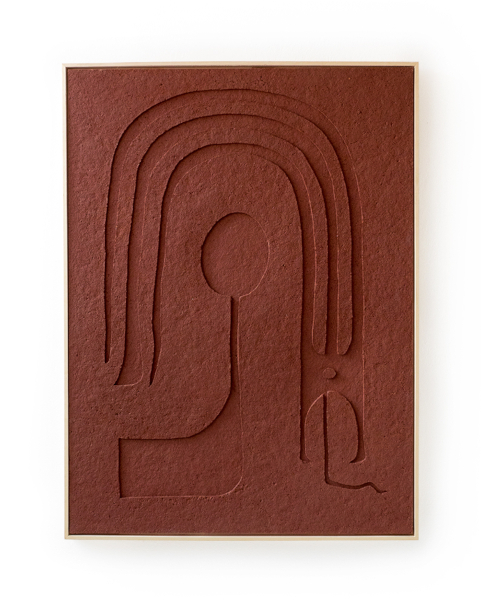
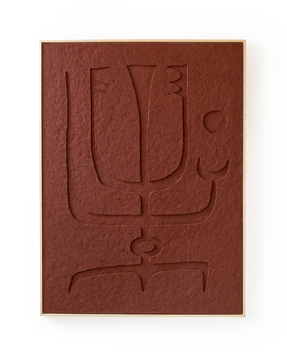
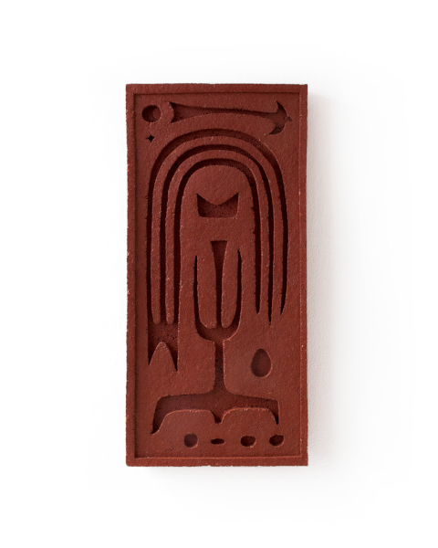
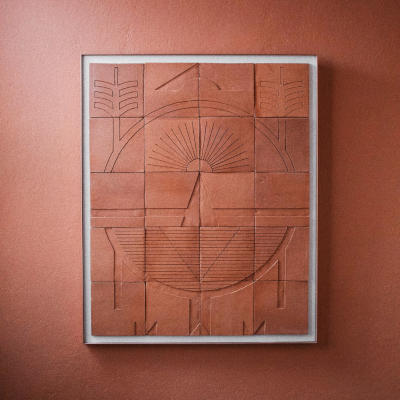
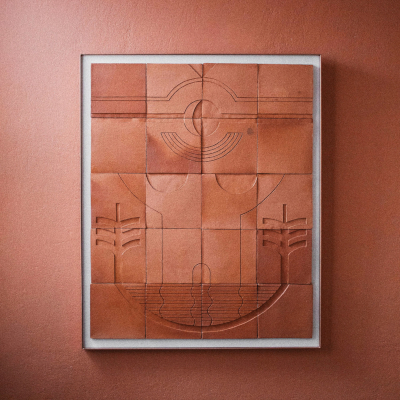
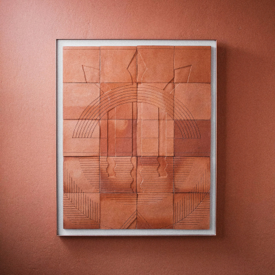
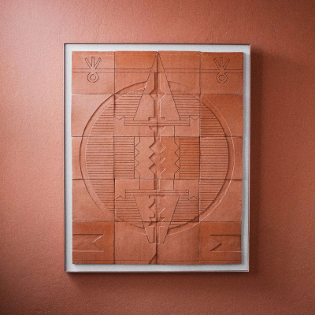
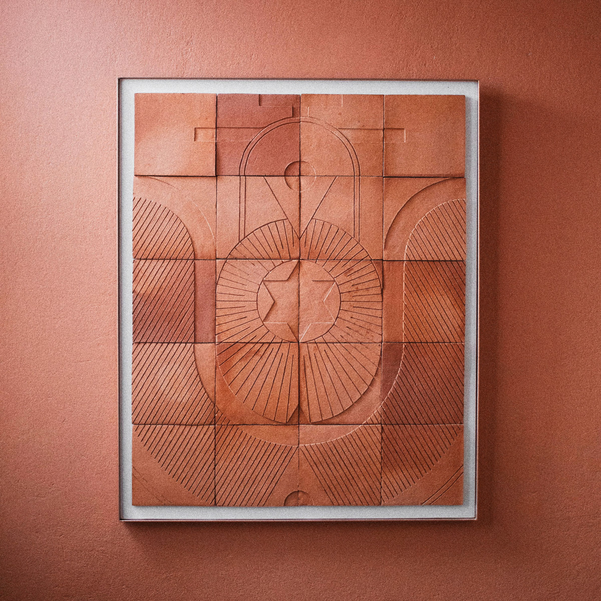
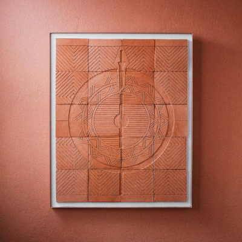
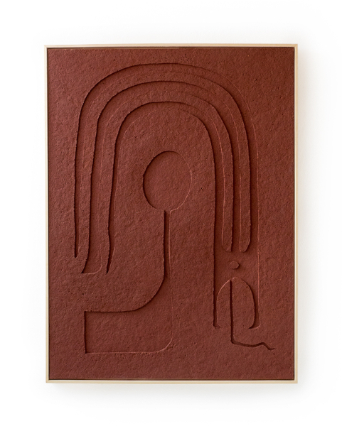
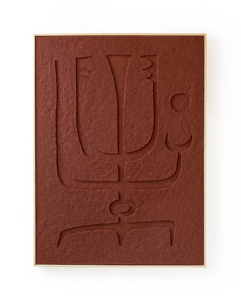
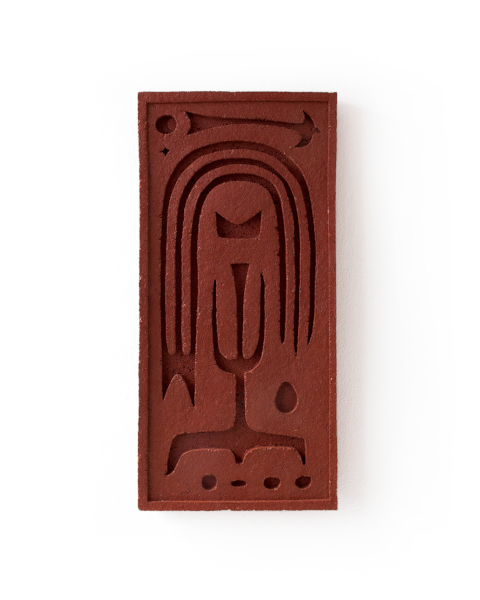
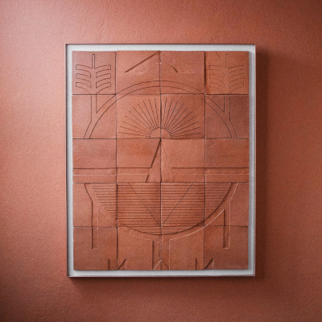
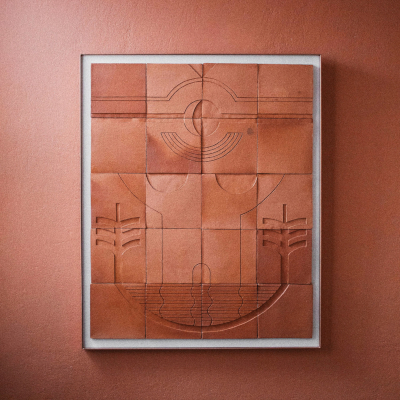
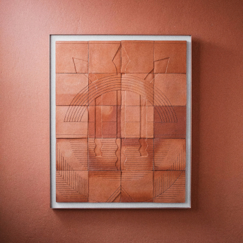
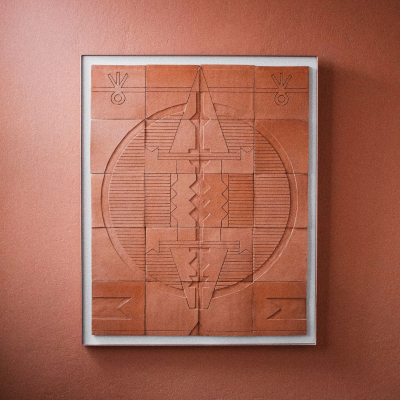
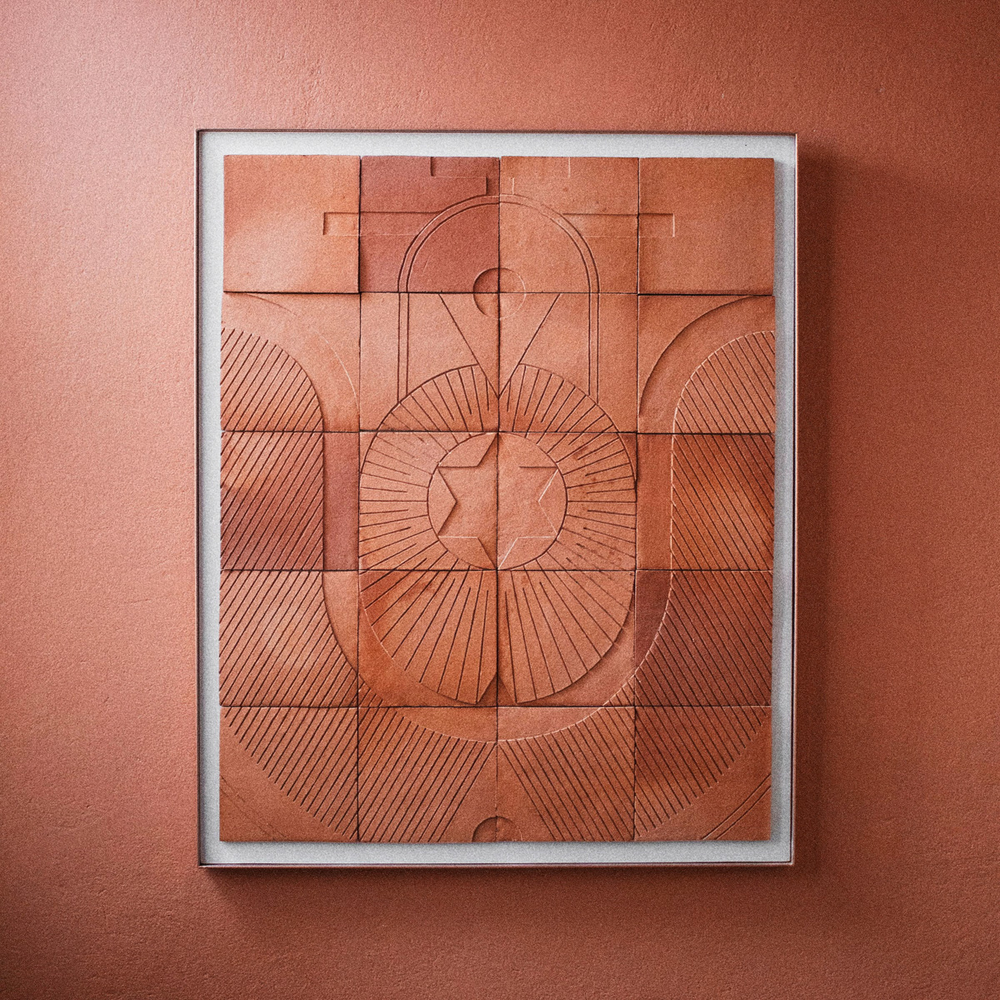
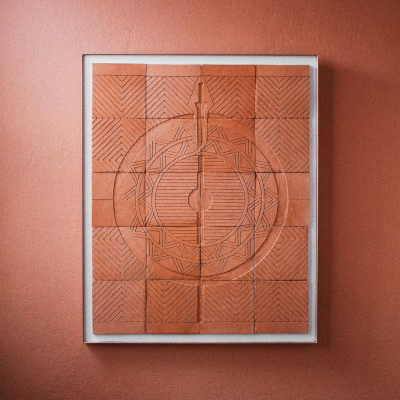